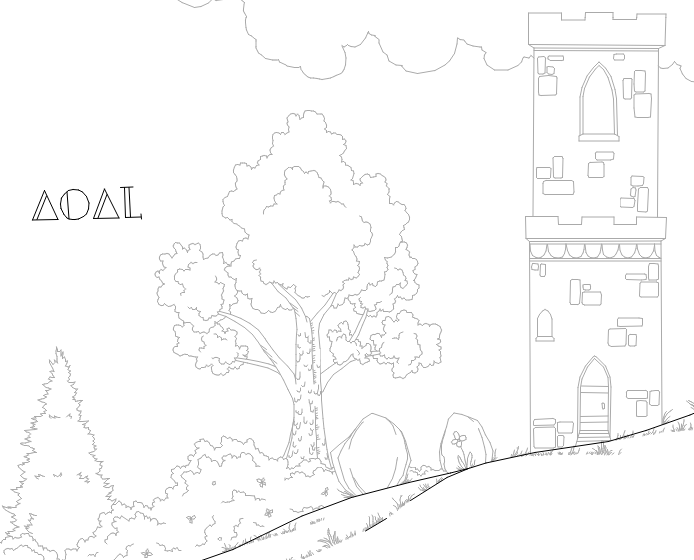
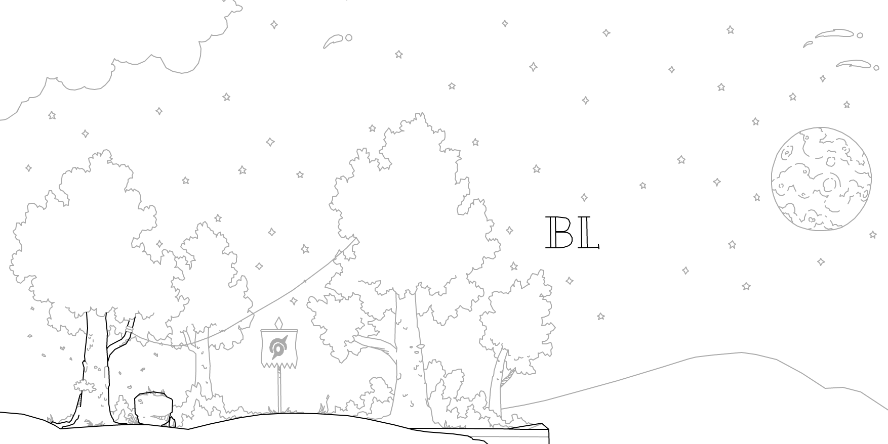

home / draw / play / news / misc
Volund
VIP Gallery of Volund
VIP Gallery of Volund
Presenting the gallery of Volund. Here you will find my best tracks, collabs and achievements. Click the pictures if more information is wanted.
Notable achievements to date:
- Placed 2nd in Round 2 of the 4th Remix Contest
- Placed 2nd in alexander's (small) Box Contest
- Placed 4th in Free Rider HD's first Official Contest
- Placed 5th in Round 1 of the 8th Remix Contest
- Placed 3rd in Round 1 of the 9th Remix Contest
- Six Features on Free Rider HD and three on Black Hat Rider
Other Achievements
- 2014 2nd 'Nicest Member'
- 2014 2nd 'Member of the Year'
- 2015 3rd 'Most Underrated Member'
- 2015 2nd 'Nicest Member'
- 2017 2nd 'Best Trackmaker of the Year'
- 2017 2nd 'Most Underrated Member'
- 2017 'Best Moment of the Year'
- 2017 'Best Thread'
- 2017 'Nicest Member'
- 2017 'Member of the Year'
- 2023 3rd 'Member of the Year'
- 2023 3rd 'Funniest Member'
- 2023 3rd 'Best Forum Thread'
- 2023 'Best Forum Thread'
- 2023 'Best Track of the Year'
Tracks:
The Mages Lair (175 KB) *Featured*
Comment on Track
This was my first Featured track, made for the 2nd round of the 4th Remix Contest, and was a remix of Maple's track Blu. Of all the track's I've remixed, this was the most enjoyable to remix. After I entered what I considered to be a failure of a round 1 entry, I was determined to redeem myself. I guessed the track we were to remix before the code was released, and got to brainstorming themes. Before long I reduced my ideas to two; a track about magic and mages, or a track about Vikings. I decided on the former. I found some great reference pictures from Deviantart to get my imagination going, and drew some of the best stuff I had ever drawn at the time. During the two week's we had to remix the track, I would have spent anywhere from 6-18 hours a day working on the track, talking about the track, finding pictures for the track and playing the track. After this time I was severely burnt out, though very proud of the final product. After a few days of deliberation, it was Featured, and one of my biggest goals was accomplished. It is one of my favourite tracks to have made, despite being 8 years old; the trackmaking process of Mage's Lair will forever be a peak memory for me on this game.
△dventure of △ lifetime (800 KB) *Featured*

Comment on Track
This was my 2nd entry for the Official Contest, my first being an NTBF despite (in hindsight) it being better than this track (this track would later become AMBITION). After being dissatisfied with my first entry I decided to restart with a bit over a month until the due date. School holidays had just started, and with little else to do over a winter break, I spent two weeks straight working on it. I did most of the track during this period, doing about 500kb-600kb of work in that amount of time (I had a mantra during this time, ‘50k a day'). I then left the track for a while when school started again, as I started to dislike where it was going; without being able to detail cliffs effectively, I began to hate the track. With about a week until the due date, I decided to try and finish it as best as I could and release it, as the competition for the Official Contest died off and I really wanted a ribbon. I did the last 200kb-300kb in that time, and although some of it was pretty empty, I released and got a feature almost instantly (inside the first 10 minutes of its release, I think) and pulled off 4th place (although if we went by Char's standings, I would have finished 2nd lol) in the contest. Funnily enough, I predicted that I would finish 4th 2 months beforehand. All in all, I have mixed feelings about this track; on one hand I drew some really cool things in it, and came 4th in the first Official Contest; on the other it is really rushed in some places and looks pretty poor wherever the track isn't a forest.
Ataraxy (353 KB) *Featured*
Comment on Track
After over 12 months without releasing a track, and thinking that I wouldn't finish a track again, I finally did. After over a year of starting cool tracks and not finishing them (a collab with TheSouthAmericanGuy called ‘Wild World', a massive Mayan-themed track, and a collab with alexander, cky199 and mR..A) I finally completed something. Ataraxy was, at first, something which I just experimented with; I drew some islands and detailed them my own way, tried to figure out how to detail rocks, stuff like that. After a while of doing this, I decided to see if I could make a track inspired by the Air Nomads in the “Avatar” series, which I love. I made a lot of progress at first, which was encouraging, as previously I hit a wall quite soon. However, as I got two thirds of the way through and started the biggest island, I hit a wall; again, I felt discouraged by my inability to detail cliffs and rock faces well. I left it for a few days, then came back and eventually worked through the slump to finish it. That large island took me close to 3 weeks, whereas the rest of the track probably took me about 1-2 week/s. I'm glad I finished it, and was able to overcome my burnout from the Official Contest.
Temple of Time (296 KB) *Featured*
Comment on Track
Drawn for the super competitive first round of RC8, Temple of Time was inspired by its namesake in the incredible Nintendo Switch game Zelda: Breath of the Wild. Going into the competition, I wanted more than anything to draw something based on the Zelda series, as a way of acknowledging the vast amounts of fun the series has given me from all the way back to Links Awakening on the Gameboy Colour. Although it was a big challenge to pull off, I think I did quite well and learnt a lot about drawing in the process. More about the trackmaking process can be read in this thread: https://community.freeriderhd.com/threads/temple-of-time.11211/ and in the RC8 edition of the FRHD News, where I was interviewed.
NOSTALGIA or time's atrophy (542 KB) *Featured*
Comment on Track
A collab with rationalities. This track had many different iterations, but this is the one that I/we settled on in the end. Rationalities did the bulk of the first 260kb, and I the last 260kb or so between September and October 2022. It was a blast making this. This was my first release in 2 years, my first non-contest track in 6 years, my first collab in 7 years, and my biggest track in 6 years; I'm very proud of the track! For more info on this track, see the following thread: https://community.freeriderhd.com/threads/nostalgia-or-times-atrophy-ft-rationalities.14287/
AMBITION (1.2MB // 1216kb) *Featured*
Comment on Track
From May 10, 2022 until September 24, 2023, if I was drawing on FRHD, I was drawing on AMBITION. This track met all my hopes and exceeded them. My goals were: to surpass 1MB/1000kb for the first time; to use every vehicle and powerup for the first time; to have a 3-5 minute long ride; to have a track that looked just as good fully zoomed out as fully zoomed in; and to have a track that would be firmly placed as one of the best releases on FRHD. I believe I achieved all I set out to do, and more. This track is the product of hundreds of hours of meticulous drawing, planning, testing and trial and error. I wanted to have a track that would be just as incredible now, as in 10 years time; the way I perceive tracks like Subterra Ulterior to be. This is my best track, and will likely be that way for good. I am more than content with this, given the sheer quality and quantity of AMBITION. For the first time, I feel that I've finally met - perhaps even exceeded - the potential I first showed all those years ago. As a fun aside, finishing NOSTALGIA // time's atrophy and AMBITION is the first time I've released more than 1 track in a 12-month span since 2016; a bit of a second wind in my trackmaking "career", perhaps!
Banther Lodge (215 KB)

Comment on Track
Not too much to say about this track in all honesty! I made Banther Lodge in 5 days for Remix Contest 9's first round. I had not planned to enter because the original track did not suit my style at all, but in the end I had a weird spurt of inspiration to compete in all three rounds, and thus wanted to release something finished and polished. The focus was completely on detail rather than a theme, and I think it shows; the detail in this track has some of my crispest detail to date. I played around with a proper background, and experimented with the teleporter; all in all, I'm really satisfied with this track. I made some references to The Dragon Prince in this track, though had little time to expand on the theme. Ultimately, it placed me third in RC9's first round with a 9.2/10, which for the time I spent on the track, I'm super happy with.
Though that's all for now, stay tuned; there are more tracks to come from me! The goal is to attain VIP status and at least 10 features. With this in mind, I have a lot of tracks planned for the future: a collab with Stig, a collab with Coated_Badger, a collab with THEend, and a couple of solo projects. Until then...
Se onr sverdar sitja hvass!
- Volund

△